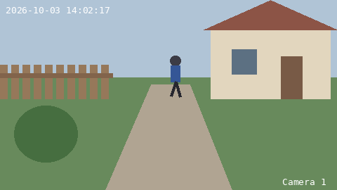
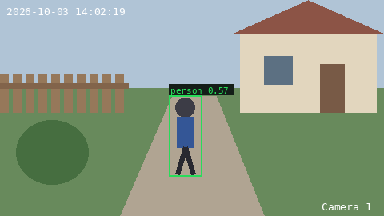

Ваши камеры, ваш Telegram, без облака
Dozorcam следит за IP-камерами на вашем Linux-узле, распознаёт людей — а не листья, тени и кошку — и присылает в Telegram снимок с человеком в рамке и клип этого момента: прямо в личку, в семейную группу или в тему камеры. Вся система управляется из чата.
- Бесплатно, открытый код
- Без облака и регистрации
- Hikvision, ONVIF, любой RTSP
- amd64 и arm64

Для кого
Для тех, у кого уже стоят IP-камеры и кто хочет знать, когда действительно пришёл человек, — без облака производителя, абонентской платы и ещё одного приложения.
Дом или дача
Несколько камер на калитке, двери и во дворе. Сообщение приходит, когда появился человек, — а не каждый раз, когда ветер качнул ветку.
Мастерская, гараж, небольшой магазин
Семья или команда сидят в одной группе Telegram, или каждый получает события в личку. Любой допущенный может попросить у камеры свежий кадр или клип.
Любителям домашних серверов
Одна команда на мини-ПК, домашнем сервере или ARM-плате. Видео не уходит дальше вашей сети и вашего чата.
Что умеет
Всё, что нужно небольшой системе камер, и ничего, что отправляло бы ваш двор на чужой сервер.
Видит людей, а не движение
Дешёвый фильтр движения с порогом шума на каждую камеру, затем нейросетевой детектор людей (по умолчанию YOLOX-Tiny, по желанию YOLOv5/YOLOv8). Порог подбирается на каждой камере по шуму её сцены.
Подтверждение от камеры
Камеры со своим распознаванием людей (Hikvision по ONVIF) подтверждают человека: когда камера говорит «кто-то есть», Dozorcam смотрит внимательнее и не теряет мелкую или полускрытую фигуру.
Не путает предметы с людьми
Мешок, ведро или куст, которые модель приняла за человека, сверяются с тем же местом кадра несколько секунд назад: ничего не сдвинулось — события нет.
Снимки и клипы в Telegram
Снимок с человеком в рамке, клип вокруг этого момента по кнопке. События камеры за минуту — один пост; хэштеги фильтруют ленту по камере или месту.
Свой режим доставки
Сюда в личку, одна группа без тем, тема на камеру или тема на локацию. Меняется в любой момент командой /mode — ничего не теряется.
Карта камер и карточки
Одна закреплённая карта: все камеры, их состояние и события за день. Нажмите камеру — её карточка: кадр, клип, пауза, уведомления, имя, локация, настройка.
Камера — за минуту
/add находит камеры (ONVIF, WS-Discovery) или по IP и логину перебирает типовые пути RTSP Reolink, Tapo, Uniview, Axis и других. Новую Hikvision бот даже активирует сам.
Без облака — данные ваши
Видео — короткий буфер в оперативной памяти вашего узла; долговременная копия — ваш собственный чат Telegram. Ни аккаунтов, ни телеметрии, ни подписки.
Объясняет свои решения
Журнал диагностики записывает каждого отвергнутого кандидата с причиной, а суточная сводка отмечает возможные пропуски: на вопрос «почему не сообщил?» есть ответ.
Как срабатывает распознавание
Каждый шаг дешёвый, пока не нужен следующий, поэтому небольшой машине хватает на несколько камер.
- 1 · БуферЗапись с каждой камеры в кольцевой буфер в памяти — диск не изнашивается.
- 2 · Фильтр движенияДальше идут только кадры, изменившиеся сильнее шума сцены.
- 3 · Детектор людейYOLO оценивает людей; человек должен держаться несколько кадров подряд.
- 4 · ПроверкиФильтр неподвижных предметов; сигнал самой камеры подтверждает или отсекает.
- 5 · TelegramСнимок с рамкой туда, куда идут события; клип — по кнопке.
Новое в 0.3.1: группа и личка сразу
Каждое событие идёт в группу и копией в личку тем, кто нажал 📩 Мне в личку на карточке камеры, — в любом режиме. Клип — ответом на пост события; правка камеры из чата больше не останавливает остальные. На 3–8 камер нужно меньше RAM, а буфер видео можно держать на SSD.
События — куда удобно
Группа с темами больше не обязательна: начните в личке одним нажатием, переходите в группу или темы позже. Мастер закрепляет свой прогресс и сам проверяет группу.
Карта вместо пульта
Закреплённая карта камер с карточками, склейка событий, хэштеги, /invite для ещё одного человека, время в вашем поясе. Список изменений
Установка одной командой
Нужны Linux-машина (amd64 или arm64, от 2 ГБ RAM) с доступом к api.telegram.org, IP-камеры в той же сети и токен бота: откройте @BotFather, отправьте /newbot, скопируйте токен.
curl -fsSL https://egorchenkov.github.io/dozorcam/install.sh | shDocker — тоже
Нет Docker или плагина compose — установщик предложит официальный скрипт get.docker.com (y/N).
Проверенные файлы
Файлы релиза кладутся в ~/dozorcam и сверяются с SHA256SUMS релиза; образ закрепляется по digest.
Под вашу машину
Токен проверяется в Telegram, язык и часовой пояс берутся с хоста, буфер в RAM — по памяти машины; мало RAM — буфер на SSD параметром DOZORCAM_BUFFER=disk.
В конце — ссылка t.me/<ваш бот>?start=<код> и QR-код. Хотите руками?
Установка через docker compose ·
установка без вопросов.
Первые 10 минут
После установщика всё происходит в Telegram. Макеты с настоящими текстами бота.
Откройте ссылку
Вы владелец. Бот закрепляет прогресс настройки.
🧭 Настройка Dozorcam Шаг 1/3 ✅ владелец — вы Шаг 2/3 ⬜ куда присылать события — выберите ниже Шаг 3/3 ⬜ первая камера — /add
Куда присылать события?
Одно нажатие — в личку, или группа с темами.
Куда присылать события камер?
📱 Сюда, в этот чат👥 В группу с темамиДобавьте камеру
/addищет, вы нажимаете камеру и шлёте «логин пароль» — сообщение сразу удаляется.Найдено новых камер: 1 (в реестре уже 0). Выберите камеру — дальше спрошу логин и пароль.
Камера 192.0.2.64✍️ Ввести адресПервый кадр
Камера появляется на карте; нажмите её — карточка со свежим кадром и клипом.
📍 Камер: 1 · в сети: 1 · событий сегодня: 0 🟢 Двор — в работе
🟢 Двор➕ Добавить камеру🔀 Куда идут событияВключите детекцию
Посмотрите на сцену, затем ⚙️ Настройка → детекция людей. Пройдите мимо — придёт снимок.
Двор · Обнаружен человек: 09.10.2026 14:02:19 МСК #двор #дом
🎞 Клип вокруг кадра
Куда идут события
Три режима доставки. Владелец меняет их командой /mode; камеры, их история и темы остаются.
Один чат без тем
Всё в одной группе — или, без группы, в личку каждому, кого вы пригласили /invite, со своей картой и своими уведомлениями. Хватит на 1–3 камеры.
Тема на камеру
Группа с «Темами»: у каждой камеры своя тема с закреплённой карточкой, карта — в «Пульте». Удобно от 4 камер.
Тема на локацию
Темы «Дом», «Дача»: внутри события нескольких камер, у каждого — хэштеги. Место камеры задаётся кнопкой 📍 Локация на её карточке.
📍 Камер: 4 · в сети: 4 · событий сегодня: 12 ▪️ Дача 🟢 Калитка — в работе последнее движение: 09.10.2026 14:02:19 МСК 🟢 Двор — в работе ▪️ Дом 🟢 Дверь — в работе ⏸ Гараж — на паузе ⬆️ Доступна 0.3.1 — на сервере: dozorcam update
Камера: Калитка Локация: Дача Статус: 🟢 онлайн Последнее движение: 09.10.2026 14:02:19 МСК Уведомления о движении: 🔔 включены #калитка #дача
/cam калитка — где угодно.
Калитка · Обнаружен человек: 09.10.2026 14:02:19 МСК +3 за минуту · последнее 14:02:58 #калитка #дача
Команды
Для каждого дня хватает карты и карточек; команды — когда нужны. /help покажет те, что есть в вашем режиме.
| Команда | Что делает |
|---|---|
/add | Ищет камеры в сети; /add <IP> или /add rtsp://хост:порт/путь — камера вне поиска. |
/cam <имя> | Карточка камеры здесь — по имени, #хэштегу или id. |
/mode | Куда идут события: один чат, тема на камеру или тема на локацию (владелец). |
/invite | Одноразовая ссылка для ещё одного человека на сутки (владелец, в личке). |
/menu | Список камер. |
/model | Смена модели детектора людей на ходу, с автооткатом. |
/setup | Перепроверяет группу и подсказывает, какого права администратора не хватает. |
/lang en|ru | Язык интерфейса. По умолчанию — CCTV_LANG установки, иначе язык вашего Telegram, иначе английский. |
/help, /version | Команды и кнопки вашего режима; установленная и последняя версия. |
Ответьте на снимок события любым текстом — придёт клип вокруг этого момента. Полный справочник.
Обновление, копия, удаление
Установщик кладёт рядом с файлами маленькую обёртку: ~/dozorcam/dozorcam.
Обновление
dozorcam updateПоказывает, что изменилось, ставит релиз по digest, проверяет здоровье и сам откатывается, если новая версия не поднялась. О новой версии бот скажет сам.
Копия и восстановление
dozorcam backup
dozorcam restore <файл>Один файл с настройками, списком камер и состоянием бота — обратно на этой или другой машине.
Удаление
dozorcam uninstallОстанавливает и удаляет контейнеры; состояние и образ — только если согласитесь. Ещё status, logs, restart, code.
Потянет ли моё железо?
Посчитайте свои камеры — калькулятор берёт цифры, замеренные на боевой установке и на тестовых машинах с жёсткими лимитами CPU и памяти.
Замерено, а не придумано
Боевая установка на 4 камеры на ARM-сервере (Neoverse-N1): в среднем 0,76 ядра за 7,5 часа, процессы движка 0,77 ГБ плюс буфер видео, бот 0,1 ГБ, образ 800 МБ. Плюс бенч на 1–8 синтетических камер с жёсткими лимитами CPU и памяти на arm64 и amd64, с буфером в RAM и на диске — методика и цифры.
Что не потянет
Платы с 1 ГБ RAM (Raspberry Pi 3, Zero 2): система, Docker, детектор и буфер даже одной камеры не помещаются. 32-битный ARM (armv7, старые NAS) — образа нет. Цифры Pi 4 — оценка (ядро примерно вдвое медленнее замеренного ARM).
Поддерживаемые камеры
| Что | Как подключается |
|---|---|
| Hikvision | Находится поиском; встроенные шаблоны RTSP и снимка там, где ONVIF молчит. Новую камеру активирует сам /add (задаёт пароль, заводит ONVIF-пользователя). Собственное распознавание людей камеры может отсекать или подтверждать детектор Dozorcam. |
| ONVIF (Profile S) | Находится автоматически (локальные /24 и WS-Discovery); адреса потока и снимка берутся по ONVIF. |
| По IP и логину | /add <IP>: по очереди пробуются типовые пути RTSP Reolink, TP-Link Tapo/VIGI, Uniview, Axis, Xiongmai/XMEye и общие; бот покажет, какой сработал. |
| Любая RTSP-камера | /add rtsp://хост:порт/путь, по желанию второй поток низкого разрешения для детектора; снимок берётся из потока. |
Проверено вживую на Hikvision G0/G2/G5 и Tantos; остальные марки проверены тестами — пути и проверенные камеры.
Честные ограничения
- Архива на диске нет: буфер — минуты в памяти, долговременная копия — чат Telegram.
- Время — в поясе из
CCTV_TZ(установщик берёт его с хоста); без него — UTC, и карта об этом предупреждает. - Узлу нужен доступ к
api.telegram.org; раз в сутки он спрашивает у GitHub последний релиз (ничего не передаётся,CCTV_UPDATE_CHECK=0— выключить). - Языки интерфейса: английский и русский.
Создано на универсальной платформе разработки приложений и ИИ-агентов через Telegram-ботов
Dozorcam создан на универсальной платформе разработки приложений и ИИ-агентов через Telegram-ботов, разработанной Романом Егорченковым. Исходный код платформы скоро будет опубликован на GitHub — следите за обновлениями в его репозиториях.
github.com/egorchenkovЛицензия
Dozorcam распространяется по Apache-2.0. В образе есть YOLOX-Tiny (Apache-2.0) и сборка FFmpeg под GPL-3.0-or-later — см. THIRD_PARTY.md. Веса YOLOv5/YOLOv8 (AGPL-3.0) не поставляются; их можно добавить самостоятельно.
Домашний проект одного человека, «как есть», без гарантий поддержки.